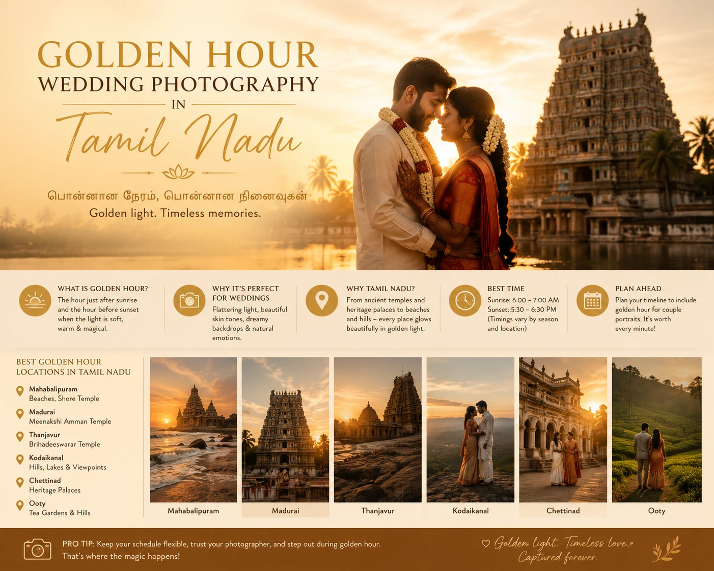
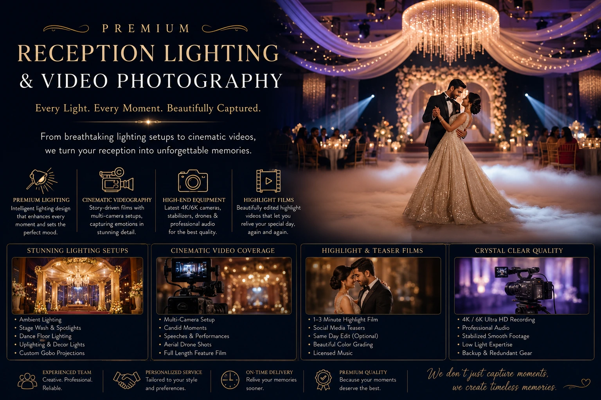

Scheduling Your Wedding Timeline Around the Best Natural Light
Why Light Is the Most Important Variable in Wedding Photography
Every professional wedding photographer videographer will tell you the same thing: the most important creative decision made on a wedding day is not the camera chosen, the lens selected, or the post-production style applied — it is the quality of light available when the shutter is pressed. Light is not a background condition of wedding photography. It is the medium itself. And unlike almost every other creative variable in a wedding shoot, light is determined almost entirely by the timing decisions made weeks before the wedding day arrives.
A wedding day timeline built around logistical convenience — venue availability, catering schedules, family travel — often produces a photography and videography situation where the most important shots are taken in the worst light: harsh midday sun for the outdoor ceremony, artificial fluorescent light for the family formals, and rushed golden hour portraits squeezed into fifteen minutes between the ceremony and the reception start.
A wedding day schedule optimization that considers the photography and videography team's lighting needs — built with input from the wedding photographer videographer before the timeline is finalised — produces a fundamentally different set of images and film. The same venues, the same couple, the same team. Just different timing. And the difference in the final images is not subtle.
Understanding Natural Light Through a Tamil Nadu Wedding Day
Tamil Nadu's climate produces specific natural light conditions at specific times of day — and understanding these conditions is the foundation of effective wedding day schedule optimization for outdoor and mixed-location Tamil weddings.
The natural light phases of a Tamil Nadu wedding day and what each phase means for photography and videography:
- Pre-dawn to sunrise (5:30 to 6:15 AM). Blue hour. The sky produces a cool, diffused ambient light that is insufficient for most photography without supplementary lighting — but for outdoor marriage shoot lighting with a skilled team using off-camera flash or LED panels, it produces some of the most dramatic and distinctive wedding images available. Rarely used but extraordinary when planned for.
- Golden hour after sunrise (6:15 to 7:15 AM). The first and often most beautiful light of the day. Warm, directional, low-angle light that flatters every skin tone and transforms almost any outdoor location into a visually extraordinary setting. For Tamil weddings where ceremonies begin at muhurtham time — often between 6:00 and 8:00 AM — this window coincides with some of the most significant ritual moments of the day. A photographer who understands this light positions and shoots accordingly, producing ceremony images of extraordinary warmth and beauty.
- Mid-morning (8:00 to 10:00 AM). The light quality degrades progressively as the sun rises. Colour temperature shifts from warm to neutral. Shadows shorten and harden. From a photography standpoint, 8:00 AM is already significantly less beautiful than 6:30 AM. Outdoor portraits and couple sessions should be completed before 10:00 AM whenever the wedding timeline allows.
- Midday (10:00 AM to 3:30 PM). The most difficult natural light of the day. The sun is high, shadows are short and harsh, contrast is extreme, and the colour temperature is cold and unflattering. For outdoor photography, this window should be avoided for portraits wherever the timeline allows. Open shade — under a covered mandap, beneath trees, inside a building adjacent to the outdoor venue — provides usable, diffused light even in midday conditions.
- Afternoon light (3:30 to 5:00 PM). Light quality begins to improve as the sun descends. Colour temperature warms gradually. Shadows lengthen. The contrast between light and shadow begins to produce depth and dimension in outdoor frames. This is the beginning of the productive photography window for afternoon wedding ceremonies and receptions.
- Golden hour before sunset (5:00 to 6:15 PM). The second and most frequently utilised golden hour window for Tamil Nadu weddings. Warm, directional light, long shadows, extraordinary warmth — the same quality as the morning golden hour but later in the day, which makes it more accessible for weddings with afternoon ceremonies and evening receptions. The couple portrait session during this window consistently produces the most widely shared and most emotionally resonant images from any wedding day.
- Blue hour after sunset (6:15 to 7:00 PM). The ambient light transitions from warm to cool as the sun disappears below the horizon. For outdoor venue photography, the blue hour produces a distinctive atmospheric quality — particularly for outdoor reception settings with string lights, lanterns, or decorative lighting that becomes visible against the darkening sky. A skilled wedding photographer videographer uses this window for the most cinematically distinctive outdoor reception images of the day.

Wedding Day Schedule Optimization: A Photographer's Timeline Recommendations
Wedding day schedule optimization for photography is not about redesigning the wedding around the camera — it is about making intelligent timing decisions within the existing ritual and logistical structure of the day that give the photography and videography team the best available light for each significant event.
The specific timeline recommendations from a professional wedding photographer videographer for a typical South Indian wedding:
- Getting-ready photography: schedule in a room with east or north-facing windows. The getting-ready segment — bridal jewellery, saree draping, hair and makeup — is most beautifully photographed in natural window light. A room with east-facing windows catches warm morning light from 6:00 to 10:00 AM. North-facing windows provide consistent, soft, diffused natural light throughout the day. Avoid south-facing rooms in midday, which receive harsh, overhead light that creates unflattering shadows on the face.
- Outdoor ceremony: before 10:00 AM or after 4:00 PM. For outdoor mandap ceremonies — particularly at heritage venues, temple locations, or garden settings — timing the ceremony before 10:00 AM or after 4:00 PM avoids the harsh midday sun that flattens faces, burns out white fabric, and produces squinting expressions from all participants. A 6:30 AM muhurtham ceremony in morning golden hour light produces ceremony images of extraordinary beauty — the warm light on the bridal jewellery, the saree silk, and the flower decorations is irreplaceable.
- Family formals: immediately after the ceremony while light is consistent. Family group portraits — the large-group photographs with extended family — should be scheduled for immediately after the ceremony while the light is still consistent and before guests begin to disperse for the reception. A pre-planned sequence of family groupings, communicated to the family coordinator before the day, allows the photographer to complete the full formal portrait sequence in 20 to 30 minutes.
- Couple portrait session: golden hour window, non-negotiable. The couple portrait session — the 20 to 30 minutes when the photographer works exclusively with the couple in the best available light — should be scheduled for the golden hour window closest to the reception start time. For evening receptions, this means the 5:00 to 6:15 PM window. For late-morning or afternoon receptions, this means the morning golden hour before the ceremony. This session is the one that produces the most widely shared images from the day — and it requires genuine time, not a rushed five minutes between events.
- Allow 30 minutes of buffer time before each significant event. Indian weddings operate on a schedule that is inherently fluid — and the photography suffers most when events run significantly behind schedule, because the golden hour window does not adjust to accommodate a delayed ceremony. Building 30 minutes of buffer into the timeline before each major event ensures that a 20-minute delay does not eliminate the entire golden hour portrait window.
Golden Hour Photography Tips: Making the Most of the Window
Golden hour photography tips for Indian wedding couples — the practical knowledge that helps a couple get the most from their golden hour portrait session:
- Face away from the sun, not toward it. The instinctive reaction of couples who have been told the light is beautiful is to face the sun — which produces squinting, harsh shadows under the brow, and blown highlights. The correct approach is to position the couple with the sun behind and slightly to one side, using the sun as a warm rim light that halos the hair and outlines the body, while the face is lit by the softer reflected ambient light. This is the golden hour technique that produces the warm silhouettes and glowing portraits that define the best wedding photography.
- Use the window, not just the moment. Golden hour is not a single optimal moment — it is a 45 to 60 minute window in which the light changes continuously. The first 15 minutes after sunset are different from the last 15 minutes. A photographer who moves the couple through different positions and orientations across the full window extracts far more visual variety than one who finds a single spot and shoots until the light fades.
- Prioritise the couple portrait session above all other golden hour uses. The golden hour window at a wedding is often in demand for multiple purposes: couple portraits, venue detail shots, bridal party photographs, family candid coverage. The couple portrait session should have uninterrupted priority during this window. The other content types can be produced at other times of day; the couple portrait in golden light cannot be recovered once the window has passed.
- Scout the portrait location in advance at the same time of day. The direction of golden hour light changes with the seasons and varies significantly by compass orientation at the specific venue. A photographer who scouts the portrait location the day before the wedding — at the same time of day — arrives on the wedding day knowing exactly where the light will fall, which position to place the couple, and what background the light will produce behind them.
- Keep the couple comfortable, not directed. The best golden hour portraits are not stiffly posed — they are the product of a couple who is relaxed, comfortable, and engaged with each other rather than performing for the camera. A good wedding photographer uses the golden hour to give the couple enough direction to look naturally together while leaving enough space for genuinely unscripted moments to emerge. These are the frames that end up on walls.
Planning Pre-Wedding Shoot Timing: The Engagement Session Light Strategy
Planning pre-wedding shoot timing follows the same principles as wedding day timeline planning — but with one significant advantage: the pre-wedding shoot has no fixed schedule. There are no muhurtham constraints, no venue catering windows, no family logistics to navigate. The shoot can be planned entirely around the optimal light for the chosen location and concept.
The timing strategy for planning pre-wedding shoot timing:
Morning Golden Hour Shoots
Best for: heritage locations, temple settings, streets and markets that are quiet in the early morning, landscape locations where the warm directional light from the east produces dramatic depth. Requires the couple to arrive at the location before 6:15 AM — which is early, but produces the most extraordinary natural light of the day.
Evening Golden Hour Shoots
Best for: outdoor settings with western-facing aspects, coastal and landscape locations that catch the setting sun, venues with warm ambient lighting that complements the golden hour quality. More accessible logistically — the couple and team arrive in the late afternoon and shoot through to blue hour.
Overcast Day Shoots
Overcast conditions are underrated for outdoor photography — the cloud cover acts as a giant natural softbox, producing even, flattering, directionless light that eliminates harsh shadows and flatters all skin tones equally. For intimate, close-framing portrait work, overcast light is actually preferable to direct golden hour light.
Interior Natural Light Shoots
For concepts built around heritage interiors, domestic spaces, or architecturally significant indoor environments, the best light is typically mid-morning or mid-afternoon when the sun is at an angle that produces directional window light within the space — not midday when overhead light flattens interiors.

Outdoor Marriage Shoot Lighting: When Natural Is Not Enough
Outdoor marriage shoot lighting at its best is entirely natural — no flash, no artificial supplementary light, just the available ambient light managed through positioning, timing, and reflectors. But not every wedding timeline can be scheduled around optimal natural light — and not every venue or ceremony condition provides the natural light quality that a professional wedding photographer videographer needs.
The professional tools for outdoor marriage shoot lighting in suboptimal natural light conditions:
- Silver and white reflectors for midday shade work. When a ceremony or portrait session must take place in open shade during midday — avoiding the direct overhead sun — reflectors redirect available ambient light back into the shadowed faces of the couple and family groups. A silver reflector adds sparkle and contrast; a white reflector produces softer, more natural fill. The result is portraits that look naturally lit rather than flash-lit.
- Off-camera flash for outdoor ceremony coverage. For outdoor ceremonies where the ambient light is insufficient — early evening ceremonies after golden hour, covered mandap ceremonies with deep shade — a single off-camera flash unit, diffused through a portable softbox and positioned at 45 degrees to the couple, produces warm, directional light that complements the available ambient without the harsh, flat look of on-camera flash.
- LED video panels for videography fill. A compact LED panel with a warm colour temperature, operated by a dedicated lighting assistant and positioned at face height and 45 degrees to the subject, provides the continuous light that video requires — unlike flash, which cannot be used for video. The best professional video photographer guide advice for outdoor videography: bring a small LED panel to every ceremony, use it sparingly, and let the natural ambient light do most of the work.
- Colour temperature matching for mixed light environments. Tamil Nadu weddings frequently take place in environments where warm incandescent mandap lighting mixes with cooler natural ambient light — producing colour casts that are difficult to correct in post-production without affecting skin tones. Professionals address this by either filtering supplementary light to match the ambient colour temperature or by shooting in a way that uses the colour temperature contrast as a creative element rather than a problem to solve.
Premium Reception Lighting: Designing the Evening for Photography and Film
Premium reception lighting is where the wedding transitions from natural light photography to designed artificial light — and where many Indian weddings lose the visual quality that the day's earlier natural light work established. A reception lit with flat overhead fluorescents or harsh halogen uplights produces photographs and video footage that feels institutionally flat regardless of the camera or lens quality brought to the room.
Premium reception lighting design for photography and videography:
- Warm colour temperature as the baseline. Receptions lit with warm white sources — tungsten bulbs, warm LED strings, candlelight, paper lanterns — produce a colour temperature that flatters all skin tones and produces footage with the warmth and depth that evening wedding content should have. Cool white or blue white lighting produces footage that reads as institutional and undermines the emotional warmth of the celebration.
- Directional light sources over flat overhead light. String lights, uplighting from low positions, candlelit centrepieces, and perimeter lighting create depth and dimension in the reception space — the same qualities that directional natural light creates outdoors. Flat overhead light, by eliminating all shadow, eliminates the depth and dimension that makes photographic subjects three-dimensional.
- A dedicated dance floor lighting plan separate from the room lighting. The most challenging photography and videography moment of an Indian wedding reception is the dance floor — where rapidly changing coloured stage lights, deep shadows, and fast movement combine to create technically difficult conditions. A discussion with the DJ and the lighting team before the wedding about the dance floor lighting plan — requesting at least one steady, warm fill light alongside any coloured effects — significantly improves the photography and videography quality without affecting the energy of the celebration.
- Consultation with the wedding photographer videographer before the venue lighting is finalised. The lighting design for the reception venue should include input from the photography and videography team before it is finalised with the venue or lighting contractor. A five-minute conversation about colour temperature, placement of supplementary fill points, and the dance floor lighting plan between the wedding coordinator and the wedding photographer videographer produces a reception environment that serves both the celebration and the coverage.
What to Tell Your Wedding Photography Near Me When Building the Timeline
When searching for wedding photography near me and building the wedding day timeline with your chosen team, share these specific pieces of information to enable the most effective light-based planning:
- The venue's compass orientation — which direction the main outdoor spaces face, so the photographer can calculate where golden hour light will fall
- The exact muhurtham time and the flexibility range within which the ceremony can begin
- The structure of any covered mandap — open on all sides, partially covered, fully covered — and the direction of its opening
- The reception venue lighting design — whether it is internally lit, uses string lights, has coloured uplighting, or relies on venue house lighting
- The season of the wedding — Tamil Nadu's golden hour timing shifts by 20 to 30 minutes between summer and winter, which affects all timing recommendations
- Any fixed timing constraints — caterer availability, venue access windows, travel time between locations — so the photographer can build the light-optimised timeline within the real constraints of the day
Conclusion
Wedding day schedule optimization for photography and videography is not about making the wedding serve the camera. It is about making simple, informed timing decisions that allow a professional wedding photographer videographer to work with the extraordinary natural light that Tamil Nadu's climate produces — rather than fighting against the harsh midday sun, the flat artificial overhead light, and the rushed golden hour window that a logistically driven timeline typically produces.
The couples who invest time in planning pre-wedding shoot timing and wedding day schedule optimization in conversation with their photography and videography team consistently report that the quality of their images exceeds what they expected — not because the team was more talented or the camera was better, but because the light was better. And in wedding photography, better light is the single greatest creative variable available.
At The PhD Ads, we work with every couple on their wedding day timeline before the day arrives — advising on outdoor marriage shoot lighting windows, golden hour photography scheduling, and premium reception lighting design — because the best images come from preparation, not luck.
Key Topics
Ready to Plan Your Wedding Timeline Around the Best Light?
At The PhD Ads, we work with couples across Madurai and Tamil Nadu on wedding day timeline planning — advising on golden hour windows, outdoor lighting strategy, and premium reception lighting design, so the photography and videography team is always in the right place at the right time with the best available light.
Email: team@e2o.in